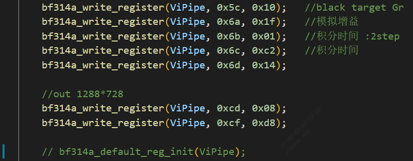
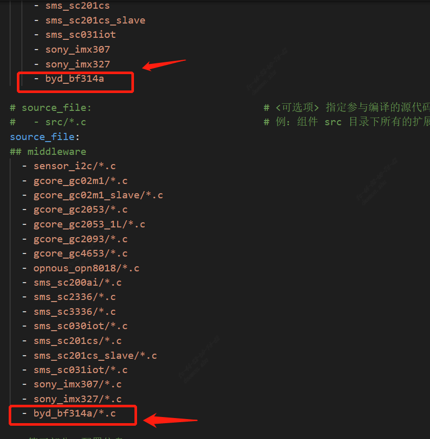
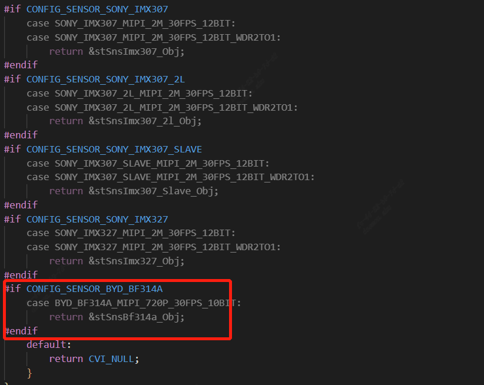
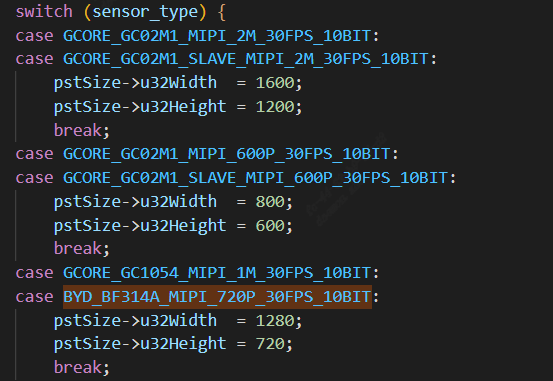
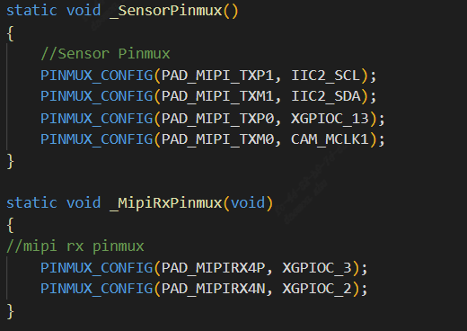
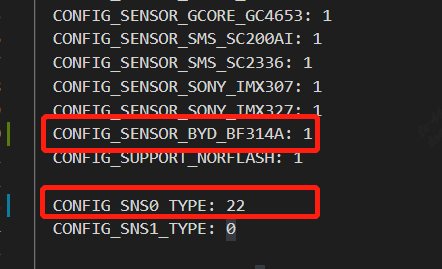

5. 图像输出调试(Alios快启)¶
5.1. 硬件准备¶
确认Sensor电源供应正确.
确认Sensor Reset GPIO正确.
确认Sensor输入参考时钟来源(主处理器或外部晶振)
确认I2C可擦写Sensor寄存器.
可直接调用文件系统内默认的iic read /iic write命令验证.
5.2. 配置初始化序列¶
配置初始化序列建议参考版本发布包里的同厂商sensor驱动。
新sensor bringup建议先注释掉AE算法相关的callbacks以排除算法影响。
修改components/cvi_platform/media/src/media_video.c，先去掉CVI_ISP_Run调用。

修改xxx_cmos_ctrl.c中的init函数，先注解xxx_default_reg_init调用。
{kind=link}

当sensor适配完能显示出图像后，记得重新打开这些注解。
5.2.1. 准备Sensor驱动¶
依Sensor厂商、最大分辨率及WDR模式选择发布包内规格最接近的sensor驱动来作修改并编出sensor库。
具体可见mars_alios/components/cvi_mmf_sdk/cvi_sensor/xxxx内的xxxx_cmos.c、xxxx_cmos_ex.h、xxxx_cmos_param.h与xxxx_sensor_ctl.c
修改xxxx_sensor_ctl.c内的I2C 配置如i2c_addr, addr_byte与data_byte
const CVI_U8 bf314a_i2c_addr = 0x6e;
const CVI_U32 bf314a_addr_byte = 1;
const CVI_U32 bf314a_data_byte = 1;
依照sensor接口规格, 修改xxxx_cmos_param.h中的xxxx_rx_attr与pfnGetRxAttr, 设置mipi-rx的属性。

.Input_mode:设置输入模式是mipi还是bt656等等。
.Mac_clk: mac时钟频率
.raw_date_type:data的位宽
.lane id:mipi数据lane、时钟lane的ID配置
.cam: mclk ID
.freq: SOC给sensor提供的参考输入时钟
.devno:mipirx的编号，sensor ID
依照sensor输出模式, 修改xxxx_cmos_param.h中的g_astxxx_mode.
static const BF314A_MODE_S g_astBf314a_mode[BF314A_MODE_NUM] = {
[BF314A_MODE_1280X720P30] = {
.name = "1280X720P30",
.astImg[0] = {
.stSnsSize = {
.u32Width = 1288,
.u32Height = 728,
},
.stWndRect = {
.s32X = 4,
.s32Y = 4,
.u32Width = 1280,
.u32Height = 720,
},
.stMaxSize = {
.u32Width = 1288,
.u32Height = 728,
},
},
.f32MaxFps = 30,
.f32MinFps = 0.34, /* vts * 30 / 0xFFFF */
.u32HtsDef = 1600,
.u32VtsDef = 750,
.stExp[0] = {
.u16Min = 1,
.u16Max = 750,
.u16Def = 450,
.u16Step = 1,
},
.stAgain[0] = {
.u32Min = 1024,
.u32Max = 16384,
.u32Def = 1024,
.u32Step = 1,
},
.stDgain[0] = {
.u32Min = 1024,
.u32Max = 16384,
.u32Def = 1024,
.u32Step = 1,
},
},
};
修改pfn_cmos_set_image_mode, 依照指定的宽高与帧率决定相符的sensor模式.
我们一般拿到的init sequence对应的输出模式都是最大分辨率，也就是all pixel scan模式。
但有些情况客户需要对sensor吐出来data进行裁剪，就需要适配成window crop mode，
要找sensor厂商提供crop mode下与之对应的init sequence，或者自行根据sensor spec进行修改。
5.2.2. Sensor初始化序列¶
实作xxxx_sensor_ctrl.c内sensor模式的初始序列pfn_cmos_sensor_init.
暂时注释xxxx_sensor_ctrl.c 内的xxxx_default_reg_init的呼叫.
新增sensor object

5.2.3. 修改package.yaml添加编译文件¶
修改cvi_alios/components/cvi_mmf_sdk/cvi_sensor/package.yaml，添加头文件和源文件
{kind=link}

5.3. 适配solution¶
5.3.1. 增加sensor type¶
build/media/cvi_sensor/sensor_cfg/sensor_cfg.h的_SNS_TYPE_E增加一个type

build/media/cvi_sensor/sensor_cfg/sensor_cfg.c
增加sensor object，在getPicSize，getDevAttr函数中添加对应的case

{kind=link}

{kind=link}


5.3.2. 修改sensor mipi相关配置¶
solutions/peripherals_test/customization/peripherals_qfn/param/custom_viparam.c
这里面配置的reset管脚，mipi lane等配置会替代sensor driver默认设定的信息
配置说明：
s32I2cAddr：sensor的i2c 设备地址
s8I2cDev:表示I2C端口号
u32Rst_port_idx: reset管脚的GPIO group
u32Rst_pin: reset管脚的GPIO num
as16LaneId:表示mipi的线序配置
as8PNSwap:表示P/N反转，不需要反转配成0，需要反转配置成1
u8MclkCam:表示选用哪一组mclk作为参考时钟
s16MacClk: mac clk
u8MclkFreq： MCLK 频率
bHwSync：dual sensor帧同步，bHwSync =1表示slave sensor sync with master sensor
s32Framerate：帧率

如果想默认使用驱动的参数，则可以只配置下图这些即可

5.3.3. 修改VB 配置¶
solutions/peripherals_test/customization/peripherals_qfn/param/custom_sysparam.c 根据sensor输出size修改VB的u16width和u16height

5.3.4. 修改添加pinmux¶
solutions/peripherals_test/customization/peripherals_qfn/src/custom_platform.c 根据板子实际硬件配置，修改mipi i2c reset等管脚复用
{kind=link}

5.3.5. 修改编译配置¶
solutions/peripherals_test/package.yaml.peripherals_qfn
{kind=link}

5.4. 运行sensor¶
编译运行后，快启下会直接启动sensor，在alios 串口输入 proc/vi_dbg 查看vi_dbg信息，帧率显示正常则表示sensor有正常出图